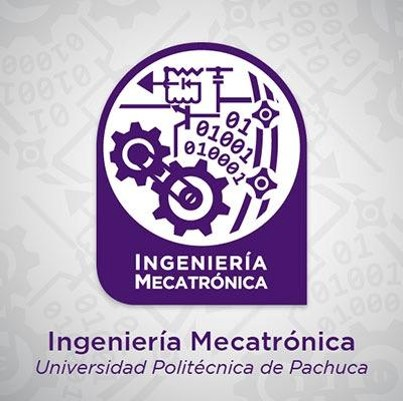

Ingeniería en Mecatrónica

Titular: M. en M. Miguel Angel Aguilera Jiménez
Teléfono de Atención: 01-7715477510 ext 2483 y 2223
Horario de Atención: 09:00 a 17:00 hrs.
Introducción
La Ingeniería Mecatrónica permite adquirir conocimientos, habilidades y destrezas para diseñar, construir, automatizar, modernizar, implantar y dar mantenimiento a sistemas o procesos a través de la integración sinérgica de elementos mecánicos, electrónicos, de control y sistemas de software.
Principales áreas de conocimiento
- Electrónica
- Mecánica
- Informática
líneas de investigación
- Análisis de sistemas multicuerpo.
- Desarrollo de sistemas Mecatrónicos inteligentes.
- Aplicación de las TICS para la recopilación de datos, el monitoreo y la evaluación de sistemas.
- Desarrollo de sistemas mecatrónicos inteligentes, basados en energías renovables.
- Instrumentación y control de procesos.
- Vehículos no tripulados.
- Sistemas embebidos.
- Diseño e innovación de nanomateriales y materiales avanzados con aplicación tecnológica.
- Tecnología e innovación de sistemas aplicados a la salud, industria y energías alternas,
- Ingeniería de software,
- Cibernética.
- Informática matemática.
- Electrónica y comunicaciones.
- Diseño de sistemas electrónicos y algoritmos de análisis para caracterización de fuentes energéticas.
- Caracterización de sólidos cristalinos y diseño de dispositivos electrónicos en sensores ópticos.
objetivo
Formar profesionistas con valores universales, competentes en el diseño, desarrollo, mantenimiento e implantación de sistemas, productos o procesos mecatrónicos, con el fin de innovar, mejorar e impulsar el desarrollo tecnológico regional y nacional.
Perfil de ingreso:
Conocimientos:
- Conocimiento de las características de la carrera y sus expectativas de trabajo.
- Conocimientos básicos de nivel medio superior de Física y Matemáticas.
Habilidades:
- Clasificar, ordenar y agrupar información.
- Interpretar información y aplicar estrategias apropiadas para realizar inferencias, derivar conclusiones y solucionar problemas.
- Interpretar tablas, gráficas, mapas, diagramas y textos con símbolos matemáticos y científicos.
- Sistematizar e integrar esquemas o cuadros sinópticos, mediante el uso de fórmulas, reglas o teorías.
- Analizar y sintetizar información de tipo textual y gráfica.
- Resolver situaciones que implican el uso de estrategias de razonamiento aritmético, algebraico, estadístico y probabilístico, geométrico y trigonométrico.
- Identificar y aplicar elementos de la lengua que permiten la creación y organización de mensajes con sentido.
- Comprender información explícita e implícita en textos informativos, argumentativos y narrativos de mediana complejidad, así como su propósito, características y lenguaje.
Actitudes y valores:
- Honestidad
- Responsabilidad
- Constancia en el estudio
- Disposición para trabajo en equipo
Perfil de egreso:
El Ingeniero Mecatrónico es un profesionista capaz de formular soluciones de diseño, desarrollo, mantenimiento e implantación de sistemas, productos y procesos mecatrónicos, mediante la integración de elementos mecánicos, electrónicos y de control, que permitan la automatización de equipos y procesos, el control de sistemas flexibles de manufactura y el desarrollo de nuevos dispositivos con el fin de innovar, mejorar e impulsar tecnológicamente a las empresas locales, nacionales e internacionales.
Competencias y habilidades
- Ejecutar el plan de mantenimiento para incrementar la eficiencia de los equipos en los procesos de producción y reducir los costos de operación, mediante la aplicación de procedimientos y criterios de mantenimiento.
- Construir circuitos electrónicos para su integración en sistemas mecatrónicos mediante la interconexión de elementos y dispositivos electrónicos.
- Diseñar elementos mecánicos y electrónicos para su manufactura mediante herramientas computacionales de diseño.
- Manufacturar elementos mecánicos para su integración en sistemas mecatrónicos mediante Máquinas-Herramientas.
- Implementar elementos mecatrónicos para la automatización de sistemas o procesos con base al resultado del diagnóstico del funcionamiento del sistema o proceso.
- Determinar la propuesta tecnológica para la solución de problemas específicos en los diferentes sectores de la sociedad, mediante el análisis e integración de los sistemas mecatrónicos.
- Determinar la configuración de robots para su operación en sistemas de producción con el uso de modelos matemáticos y su simulación.
- Incorporar robots para hacer eficientes los procesos, mediante su instalación y programación acorde a las necesidades de producción.
oportunidades de trabajo
El Ingeniero Mecatrónico puede desempeñarse en cualquier área relacionada con la industria metal-mecánica, de maquinaria pesada, equipo agroindustrial y el sector público.
- En investigación y diseño del producto, desarrollo de sistemas de automatización.
- En asesoría, servicio técnico especializado, mantenimiento y fabricación de piezas.
- En generación, administración y control de planes de mantenimiento.